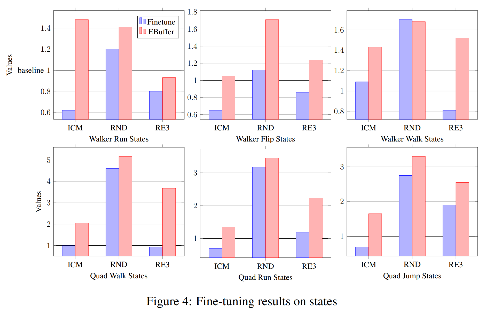

<!DOCTYPE html>
<html lang="en">
  <head>
    <meta charset="utf-8" />
    <meta name="viewport" content="width=device-width, initial-scale=1.0, maximum-scale=1.0, user-scalable=no" />
	<meta name="apple-mobile-web-app-capable" content="yes" />

    <title></title>
    <link rel="stylesheet" href="dist/reveal.css" />
    <link rel="stylesheet" href="dist/theme/dracula.css" id="theme" />
    <link rel="stylesheet" href="plugin/highlight/zenburn.css" />
	<link rel="stylesheet" href="css/layout.css" />
	<link rel="stylesheet" href="plugin/customcontrols/style.css">


    <script defer src="dist/fontawesome/all.min.js"></script>

	<script type="text/javascript">
		var forgetPop = true;
		function onPopState(event) {
			if(forgetPop){
				forgetPop = false;
			} else {
				parent.postMessage(event.target.location.href, "app://obsidian.md");
			}
        }
		window.onpopstate = onPopState;
		window.onmessage = event => {
			if(event.data == "reload"){
				window.document.location.reload();
			}
			forgetPop = true;
		}

		function fitElements(){
			const itemsToFit = document.getElementsByClassName('fitText');
			for (const item in itemsToFit) {
				if (Object.hasOwnProperty.call(itemsToFit, item)) {
					var element = itemsToFit[item];
					fitElement(element,1, 1000);
					element.classList.remove('fitText');
				}
			}
		}

		function fitElement(element, start, end){

			let size = (end + start) / 2;
			element.style.fontSize = `${size}px`;

			if(Math.abs(start - end) < 1){
				while(element.scrollHeight > element.offsetHeight){
					size--;
					element.style.fontSize = `${size}px`;
				}
				return;
			}

			if(element.scrollHeight > element.offsetHeight){
				fitElement(element, start, size);
			} else {
				fitElement(element, size, end);
			}		
		}


		document.onreadystatechange = () => {
			fitElements();
			if (document.readyState === 'complete') {
				if (window.location.href.indexOf("?export") != -1){
					parent.postMessage(event.target.location.href, "app://obsidian.md");
				}
				if (window.location.href.indexOf("print-pdf") != -1){
					let stateCheck = setInterval(() => {
						clearInterval(stateCheck);
						window.print();
					}, 250);
				}
			}
	};


        </script>
  </head>
  <body>
    <div class="reveal">
      <div class="slides"><section  data-markdown><script type="text/template"><!-- .slide: class="drop" -->
<div class="" style="position: absolute; left: 0px; top: 0px; height: 1024px; width: 768px; min-height: 1024px; display: flex; flex-direction: column; align-items: center; justify-content: center" absolute="true">

### Unsupervised Reinforcement Learning for Fast Novel Task Adaptation 

Methods of unsupervised pre-training for fast multi-task adaptation in Reinforcement Learning (RL)
</div></script></section><section  data-markdown><script type="text/template"><!-- .slide: class="drop" -->
<div class="" style="position: absolute; left: 0px; top: 0px; height: 1024px; width: 768px; min-height: 1024px; display: flex; flex-direction: column; align-items: center; justify-content: center" absolute="true">

### Outline

- Intro to RL
- Preliminaries and notations
- URLB
- Exploration algorithms
- World Models
- Thesis contributions
- Future work
</div></script></section><section  data-markdown><script type="text/template"><!-- .slide: class="drop" -->
<div class="" style="position: absolute; left: 0px; top: 0px; height: 1024px; width: 768px; min-height: 1024px; display: flex; flex-direction: column; align-items: center; justify-content: center" absolute="true">

### Intro to RL


Goal is to maximize accumulated reward
</div></script></section><section  data-markdown><script type="text/template"><!-- .slide: class="drop" -->
<div class="" style="position: absolute; left: 0px; top: 0px; height: 1024px; width: 768px; min-height: 1024px; display: flex; flex-direction: column; align-items: center; justify-content: center" absolute="true">

### Reinforcment Learning
#### Achivements 


</div></script></section><section  data-markdown><script type="text/template"><!-- .slide: class="drop" -->
<div class="" style="position: absolute; left: 0px; top: 0px; height: 1024px; width: 768px; min-height: 1024px; display: flex; flex-direction: column; align-items: center; justify-content: center" absolute="true">

### Reinforcment Learning
#### Achivements 


</div></script></section><section  data-markdown><script type="text/template"><!-- .slide: class="drop" -->
<div class="" style="position: absolute; left: 0px; top: 0px; height: 1024px; width: 768px; min-height: 1024px; display: flex; flex-direction: column; align-items: center; justify-content: center" absolute="true">

### Reinforcment Learning
#### Achivements 


</div></script></section><section  data-markdown><script type="text/template"><!-- .slide: class="drop" -->
<div class="" style="position: absolute; left: 0px; top: 0px; height: 1024px; width: 768px; min-height: 1024px; display: flex; flex-direction: column; align-items: center; justify-content: center" absolute="true">

### Reinforcment Learning
#### Limitations

- Cannot reuse models/data from similar environemnts
	- Unlike foundational models 
        - CV: BYOL
        - NLP: GPT
- Hard optimization - distributional shift during training
- Hard to specify a reward function
</div></script></section><section  data-markdown><script type="text/template"><!-- .slide: class="drop" -->
<div class="" style="position: absolute; left: 0px; top: 0px; height: 1024px; width: 768px; min-height: 1024px; display: flex; flex-direction: column; align-items: center; justify-content: center" absolute="true">

### Reinforcment Learning
#### Exploration vs Exploitation

-   Sparse reward environments is challanging for optimization
-   We can add an auxiliary reward to facilitate exploration
-   Penalize already visited states

</div>

<aside class="notes"><ul>
<li>Problem with sparse  reward is that most trajectories get 0 reward</li>
</ul>
</aside></script></section><section  data-markdown><script type="text/template"><!-- .slide: class="drop" -->
<div class="" style="position: absolute; left: 0px; top: 0px; height: 1024px; width: 768px; min-height: 1024px; display: flex; flex-direction: column; align-items: center; justify-content: center" absolute="true">

### Reinforcment Learning
#### TV problem


</div>

<aside class="notes"><ul>
<li>TV problem:</li>
<li>The agent may encounter a TV producing endless noise and will be motivated to procrastinate and stay watching the TVthe exploration exploitation problem</li>
</ul>
</aside></script></section><section  data-markdown><script type="text/template"><!-- .slide: class="drop" -->
<div class="" style="position: absolute; left: 0px; top: 0px; height: 1024px; width: 768px; min-height: 1024px; display: flex; flex-direction: column; align-items: center; justify-content: center" absolute="true">

### Preliminaries and notations
#### Outline
- MDP definitions
- RL objective
- Q-Learning
</div></script></section><section  data-markdown><script type="text/template"><!-- .slide: class="drop" -->
<div class="" style="position: absolute; left: 0px; top: 0px; height: 1024px; width: 768px; min-height: 1024px; display: flex; flex-direction: column; align-items: center; justify-content: center" absolute="true">

### Markov Decision Process
#### MDP

- MDP = < S, T, A, R >
- S = state
- T = transition `$T: S\times A \rightarrow S$`
- A = action (real or discrete)
- R = reward `$R: S\times A \rightarrow \mathbb{R}$`
</div></script></section><section  data-markdown><script type="text/template"><!-- .slide: class="drop" -->
<div class="" style="position: absolute; left: 0px; top: 0px; height: 1024px; width: 768px; min-height: 1024px; display: flex; flex-direction: column; align-items: center; justify-content: center" absolute="true">

### RL objective

- The goal is to find a policy `$\pi$` that maximizes the expected discounted reward `$\mathcal{R}=\mathbb{E}_{\tau\sim\pi}\left[\sum_{t=0}^T\gamma^tr_t\right]$`
-   Additional definitions:
    - `$Q^\pi(s,a)=\mathbb{E}_{\tau\sim\pi}\left[\sum_{t=0}^T\gamma^tr_t|s_0=s,a_0=a\right]$`
    - `$V^\pi(s)=\mathbb{E}_{\tau\sim\pi}\left[\sum_{t=0}^T\gamma^tr_t|s_0=s\right]$`
-   Using these definitions we can define the optimal policy as: 
    - `$\pi(s)=argmax_a Q^\pi(s,a)$`
</div></script></section><section  data-markdown><script type="text/template"><!-- .slide: class="drop" -->
<div class="" style="position: absolute; left: 0px; top: 0px; height: 1024px; width: 768px; min-height: 1024px; display: flex; flex-direction: column; align-items: center; justify-content: center" absolute="true">

### Q-Learning

-   An approach to find the optimal policy is to look at the bellman equation:
    -   `$Q(s_t,a_t) = \mathbb{E}_{s'\sim p(s'|s,a)}[r_{t+1}+\gamma Q(s',a')]$`
-   Instead if learning `$\pi$` directly, we will learn the Q function, where the loss is:
    - `$||{Q_*(s_t,a_t) - r_{t+1}+\gamma Q(s',a')}||^2$`
-   This can be easily calculated from batches of `$(s,a,r,s')$` batches
</div>

<aside class="notes"><ul>
<li>discuss on/off policy considerations<ul>
<li>We are not dependant on the policy that produced these state/actions, all data is useful</li>
</ul>
</li>
</ul>
</aside></script></section><section  data-markdown><script type="text/template"><!-- .slide: class="drop" -->
<div class="" style="position: absolute; left: 0px; top: 0px; height: 1024px; width: 768px; min-height: 1024px; display: flex; flex-direction: column; align-items: center; justify-content: center" absolute="true">

### Deep Deterministic Policy Gradient
#### (DDPG)

-   A variation of Q-Learning which supports continuous actions
-   Introduces an additional policy network `$\pi_\theta$` which is trained to maximize the Q network
-   This is the basic RL algorithm which is used in this work
</div>

<aside class="notes"><ul>
<li>Emphasis on two learned networks, <code>$Q_\phi$</code> and <code>$\pi_\theta$</code></li>
</ul>
</aside></script></section><section  data-markdown><script type="text/template"><!-- .slide: class="drop" -->
<div class="" style="position: absolute; left: 0px; top: 0px; height: 1024px; width: 768px; min-height: 1024px; display: flex; flex-direction: column; align-items: center; justify-content: center" absolute="true">

### Unsupervised Reinforcement Learning Benchmark 
#### URLB
- Many methods develop exploration strategies
- Propose an unsupervised exploration stage to later help learning tasks later
- The benchmark tries to establish a comparison of algorithms for transferring unsupervised exploration to specific tasks
</div></script></section><section  data-markdown><script type="text/template"><!-- .slide: class="drop" -->
<div class="" style="position: absolute; left: 0px; top: 0px; height: 1024px; width: 768px; min-height: 1024px; display: flex; flex-direction: column; align-items: center; justify-content: center" absolute="true">

### URLB

-   Unsupervised learning pretraining stage - environment without any reward
-   Task fine-tuning stage - a set of tasks with a predefined reward
-   Using a number of steps in the pretraining stage, solve a specific task using as few steps as possible
</div></script></section><section  data-markdown><script type="text/template"><!-- .slide: class="drop" -->
<div class="" style="position: absolute; left: 0px; top: 0px; height: 1024px; width: 768px; min-height: 1024px; display: flex; flex-direction: column; align-items: center; justify-content: center" absolute="true">

### URLB

-   The benchmark tests:
    -   3 environments
    -   4 tasks each
    -   2 observation types for each (pixel and state) 
-   8 exploration algorithms are compared (we focus on top 2)


</div></script></section><section  data-markdown><script type="text/template"><!-- .slide: class="drop" -->
<div class="" style="position: absolute; left: 0px; top: 0px; height: 1024px; width: 768px; min-height: 1024px; display: flex; flex-direction: column; align-items: center; justify-content: center" absolute="true">

### ICM review

-   Intrinsic reward construction
-   Predict state representation
	-   Learned from predicting action from consecutive states
-   Inverse model to fight TV problem


</div></script></section><section  data-markdown><script type="text/template"><!-- .slide: class="drop" -->
<div class="" style="position: absolute; left: 0px; top: 0px; height: 1024px; width: 768px; min-height: 1024px; display: flex; flex-direction: column; align-items: center; justify-content: center" absolute="true">

### RND review

-   Reward definition: `$||\hat{f}(s_{t+1})-f(s_{t+1})||$`
-   Predict random representation
-   Optimize   such that we minimize the reward
-   This objective is also the intrinsic reward
-   First better then average human performance on ATARI Montezuma game
</div></script></section><section  data-markdown><script type="text/template"><!-- .slide: class="drop" -->
<div class="" style="position: absolute; left: 0px; top: 0px; height: 1024px; width: 768px; min-height: 1024px; display: flex; flex-direction: column; align-items: center; justify-content: center" absolute="true">

### RND review

</div></script></section><section  data-markdown><script type="text/template"><!-- .slide: class="drop" -->
<div class="" style="position: absolute; left: 0px; top: 0px; height: 1024px; width: 768px; min-height: 1024px; display: flex; flex-direction: column; align-items: center; justify-content: center" absolute="true">

### RND review


</div></script></section><section  data-markdown><script type="text/template"><!-- .slide: class="drop" -->
<div class="" style="position: absolute; left: 0px; top: 0px; height: 1024px; width: 768px; min-height: 1024px; display: flex; flex-direction: column; align-items: center; justify-content: center" absolute="true">

### RE3 review

-   Penalize states by k-NN density in random representation
-   Optimizes state covarage by entropy maximization
-   State Entropy is esitmated by `$\log(y_i - y_i^{k-NN} + 1)$`
</div>

<aside class="notes"><ul>
<li>tested specifically on augmented image states</li>
</ul>
</aside></script></section><section  data-markdown><script type="text/template"><!-- .slide: class="drop" -->
<div class="" style="position: absolute; left: 0px; top: 0px; height: 1024px; width: 768px; min-height: 1024px; display: flex; flex-direction: column; align-items: center; justify-content: center" absolute="true">

### RE3 review


</div></script></section><section  data-markdown><script type="text/template"><!-- .slide: class="drop" -->
<div class="" style="position: absolute; left: 0px; top: 0px; height: 1024px; width: 768px; min-height: 1024px; display: flex; flex-direction: column; align-items: center; justify-content: center" absolute="true">

### World Models

-   Learn environment dynamics `$P(s',r|s,a)$` so we can:
    -   Plan ahead
    -   Generate additional data
    -   Provide more efficient RL learning
-   Recent advanced significantly improved RL sample efficiency 

### World Models
#### Dreamer


</div></script></section><section  data-markdown><script type="text/template"><!-- .slide: class="drop" -->
<div class="" style="position: absolute; left: 0px; top: 0px; height: 1024px; width: 768px; min-height: 1024px; display: flex; flex-direction: column; align-items: center; justify-content: center" absolute="true">

### Unsupervised Pretraining Setting

-   Pretraining stage: 
    -   A policy is trained using an intrinsic reward for 2M steps.
    -   The intrinsic reward is represented by the evaluated exploration algorithm.
-   Fine-tuning stage:
    -   The pre-trained exploration policy is further fine-tuned using a only task reward.
-   Evaluation:
    -   After 100K finetuning steps, the policy is tested on the target task.
</div>

<aside class="notes"><ul>
<li>The exploration policy can learn more efficient representations</li>
<li>As vector states representation is already minimal, there is not much to improve</li>
<li>Pixel based observations on the other hand, are much less compact, and efficient encoders can be learned (some more references)</li>
</ul>
</aside></script></section><section  data-markdown><script type="text/template"><!-- .slide: class="drop" -->
<div class="" style="position: absolute; left: 0px; top: 0px; height: 1024px; width: 768px; min-height: 1024px; display: flex; flex-direction: column; align-items: center; justify-content: center" absolute="true">

### Thesis Contributions
#### Outline

-   URLB setup drawbacks
-   Exploration Buffer + Reward Model (RM)
-   World Models
-   Expert Demonstrations
</div></script></section><section  data-markdown><script type="text/template"><!-- .slide: class="drop" -->
<div class="" style="position: absolute; left: 0px; top: 0px; height: 1024px; width: 768px; min-height: 1024px; display: flex; flex-direction: column; align-items: center; justify-content: center" absolute="true">

### Thesis Contributions
#### URLB setup drawbacks

-   During pre-training, all the collected data is discarted.
	-   We will refer to it as the Unsupervised Exploration Buffer (UEB)
-   At the end of pre-training, the policy is trained to reach the horizon of explored data. (task dependant)
-   Given few demonstrations, we can dramatically reduce required task expirience.
</div></script></section><section  data-markdown><script type="text/template"><!-- .slide: class="drop" -->
<div class="" style="position: absolute; left: 0px; top: 0px; height: 1024px; width: 768px; min-height: 1024px; display: flex; flex-direction: column; align-items: center; justify-content: center" absolute="true">

### Exploration Buffer + Reward Model

-   We propose to recycle the exploration data using a RM `$R(s,a)$`.
-   During fine-tuning:
    -   While collecting task data, we sample a batch to train the model:
        -   sampled online data: train the RM.
        -   sampled UEB: infer the task reward using the RM
    -   Data is collected only if we sample online data.
</div>

<aside class="notes"><ul>
<li>Instead of transferring the policy, we transfer the data - pre-populate the replay buffer (Similar approach with known reward function)</li>
<li>During training, we learn a reward model <code>$R(s,a)$</code> and apply it on data from the UEB</li>
<li>Further improve efficiency by collecting data only after sampling from the online replay buffer</li>
<li>Testing additional approach</li>
</ul>
</aside></script></section><section  data-markdown><script type="text/template"><!-- .slide: class="has-light-background drop" data-background-color="#f0f0f0" -->
<div class="" style="position: absolute; left: 0px; top: 0px; height: 1024px; width: 768px; min-height: 1024px; display: flex; flex-direction: column; align-items: center; justify-content: center" absolute="true">

### Exploration Buffer + Reward Model
#### Setup

<split even>


</split>
</div></script></section><section  data-markdown><script type="text/template"><!-- .slide: class="drop" -->
<div class="" style="position: absolute; left: 0px; top: 0px; height: 1024px; width: 768px; min-height: 1024px; display: flex; flex-direction: column; align-items: center; justify-content: center" absolute="true">

### Exploration Buffer + Reward Model
#### States



</div></script></section><section  data-markdown><script type="text/template"><!-- .slide: class="drop" -->
<div class="" style="position: absolute; left: 0px; top: 0px; height: 1024px; width: 768px; min-height: 1024px; display: flex; flex-direction: column; align-items: center; justify-content: center" absolute="true">

### Exploration Buffer + Reward Model
#### Pixels


</div></script></section><section  data-markdown><script type="text/template"><!-- .slide: class="drop" -->
<div class="" style="position: absolute; left: 0px; top: 0px; height: 1024px; width: 768px; min-height: 1024px; display: flex; flex-direction: column; align-items: center; justify-content: center" absolute="true">

### World Models

-   Another opportunity to leverage the UEB:
    -   Train the world model using the UEB
    -   During fine-tuning:
        -   Continue WM fine-tuning, with the correct reward
        -   Train a policy using DreamerV3
-   Was later demonstrated in another work
</div></script></section><section  data-markdown><script type="text/template"><!-- .slide: class="drop" -->
<div class="" style="position: absolute; left: 0px; top: 0px; height: 1024px; width: 768px; min-height: 1024px; display: flex; flex-direction: column; align-items: center; justify-content: center" absolute="true">

### World Models
#### Dreamer


</div></script></section><section  data-markdown><script type="text/template"><!-- .slide: class="drop" -->
<div class="" style="position: absolute; left: 0px; top: 0px; height: 1024px; width: 768px; min-height: 1024px; display: flex; flex-direction: column; align-items: center; justify-content: center" absolute="true">

### Expert Demonstrations
#### Setup


-   We want to further remove relience on online data aquisition.
-   We Propose to use few expert demonstrations 
-   given 4 expert demos, use 10K additional online data
    -   (Instead of the 100K of URLB)
-   We test this setup using the methods descibed here
</div></script></section><section  data-markdown><script type="text/template"><!-- .slide: class="drop" -->
<div class="" style="position: absolute; left: 0px; top: 0px; height: 1024px; width: 768px; min-height: 1024px; display: flex; flex-direction: column; align-items: center; justify-content: center" absolute="true">

### Expert Demonstrations
#### Experiments

-   Reward Model
    -   Keep UEB and use the RM when sampling it
    -   finetune the exploration policy 
-   MURLB
    -   current SOTA on URLB using World model
    -   during pre-training, train the world model
    -   fine-tune the policy with the world model on the task
-   +Expert
    -   initialize finetuing with 4 expert demos
    -   Use the UEB during finetuning
    -   discart the exploration policy
</div></script></section><section  data-markdown><script type="text/template"><!-- .slide: class="drop" -->
<div class="" style="position: absolute; left: 0px; top: 0px; height: 1024px; width: 768px; min-height: 1024px; display: flex; flex-direction: column; align-items: center; justify-content: center" absolute="true">

### Expert Demonstrations
#### Results

-   We evaluate at 10K online steps

| Task/Method    | Reward Model | MURLB | Reward Model+Expert | MURLB+Expert | MURLB+Expert+Actor |
| -------------- | ------------ | ----- | ------------------- | ------------ | ------------------ |
| Walker Walk    | 197          | 630   | 375                 | *903*        | 884                |
| Walker Run     | 57           | 328   | 106                 | *559*        | 383                |
| Walker Flip    | 210          | 607   | 285                 | *830*        | 771                |
| Quadruped Walk | 90           | 339   | 402                 | 314          | *424*              |
| Quadruped Run  | 103          | 200   | 412                 | 350          | *439*              |
| Quadruped Jump | 122          | 449   | 630                 | 539          | *635*              |
</div></script></section><section  data-markdown><script type="text/template"><!-- .slide: class="drop" -->
<div class="" style="position: absolute; left: 0px; top: 0px; height: 1024px; width: 768px; min-height: 1024px; display: flex; flex-direction: column; align-items: center; justify-content: center" absolute="true">

World Models

-   World models define the dynamics of the environment :
    - t
-   In stochastic environments :
-   In deterministic environments: 
-   Model based RL uses this model to plan ahead
-   Usually in real world problems, the world model is hard to get accurately
-   A line of work tries to learn the model with the policy, and continue train in the model, while dreaming [schmidthuber,PlaNET, Dreamer v1,2,3] - producing trajectories using the model instead of the environment
-   possible benefit in unsupervised RL
</div></script></section><section  data-markdown><script type="text/template"><!-- .slide: class="drop" -->
<div class="" style="position: absolute; left: 0px; top: 0px; height: 1024px; width: 768px; min-height: 1024px; display: flex; flex-direction: column; align-items: center; justify-content: center" absolute="true">

Dreamer V3 review

-   A recent world model, solved challenging games in record time
-   By utilizing the model to generate trajectories, can learn from much less real environment interactions
-   SOTA results on ATARI100K benchmark
-   Based on an LSTM, with special discrete representation as a regularization
-   The policy is trained on the world model representation instead of the actual state
-   Showed many uses in other works (lexa and more)
</div></script></section><section  data-markdown><script type="text/template"><!-- .slide: class="drop" -->
<div class="" style="position: absolute; left: 0px; top: 0px; height: 1024px; width: 768px; min-height: 1024px; display: flex; flex-direction: column; align-items: center; justify-content: center" absolute="true">

Suggestion for further work

-   Our idea is instead of repopulating the replay buffer with exploration stage trajectories (with irrelevant exploration reward)
-   Learn a world model, and transfer it to the finetuning stage, while finetuning the reward model
-   No need to store large amounts of exploration data, also improving reward model can be more beneficial from task training
</div></script></section></div>
    </div>

    <script src="dist/reveal.js"></script>

    <script src="plugin/markdown/markdown.js"></script>
    <script src="plugin/highlight/highlight.js"></script>
    <script src="plugin/zoom/zoom.js"></script>
    <script src="plugin/notes/notes.js"></script>
    <script src="plugin/math/math.js"></script>
	<script src="plugin/mermaid/mermaid.js"></script>
	<script src="plugin/chart/chart.min.js"></script>
	<script src="plugin/chart/plugin.js"></script>
	<script src="plugin/customcontrols/plugin.js"></script>

    <script>
      function extend() {
        var target = {};
        for (var i = 0; i < arguments.length; i++) {
          var source = arguments[i];
          for (var key in source) {
            if (source.hasOwnProperty(key)) {
              target[key] = source[key];
            }
          }
        }
        return target;
      }

	  function isLight(color) {
		let hex = color.replace('#', '');

		// convert #fff => #ffffff
		if(hex.length == 3){
			hex = `${hex[0]}${hex[0]}${hex[1]}${hex[1]}${hex[2]}${hex[2]}`;
		}

		const c_r = parseInt(hex.substr(0, 2), 16);
		const c_g = parseInt(hex.substr(2, 2), 16);
		const c_b = parseInt(hex.substr(4, 2), 16);
		const brightness = ((c_r * 299) + (c_g * 587) + (c_b * 114)) / 1000;
		return brightness > 155;
	}

	var bgColor = getComputedStyle(document.documentElement).getPropertyValue('--r-background-color').trim();
	var isLight = isLight(bgColor);

	if(isLight){
		document.body.classList.add('has-light-background');
	} else {
		document.body.classList.add('has-dark-background');
	}

      // default options to init reveal.js
      var defaultOptions = {
        controls: true,
        progress: true,
        history: true,
        center: true,
        transition: 'default', // none/fade/slide/convex/concave/zoom
        plugins: [
          RevealMarkdown,
          RevealHighlight,
          RevealZoom,
          RevealNotes,
          RevealMath.MathJax3,
		  RevealMermaid,
		  RevealChart,
		  RevealCustomControls,
        ],


    	allottedTime: 120 * 1000,

		mathjax3: {
			mathjax: 'plugin/math/mathjax/tex-mml-chtml.js',
		},
		markdown: {
		  gfm: true,
		  mangle: true,
		  pedantic: false,
		  smartLists: false,
		  smartypants: false,
		},

		mermaid: {
			theme: isLight ? 'default' : 'dark',
		},

		customcontrols: {
			controls: [
			]
		},
      };

      // options from URL query string
      var queryOptions = Reveal().getQueryHash() || {};

      var options = extend(defaultOptions, {"width":768,"height":1024,"margin":0.04,"controls":true,"progress":true,"slideNumber":true,"transition":"slide","transitionSpeed":"default"}, queryOptions);
    </script>

    <script>
      Reveal.initialize(options);
    </script>
	<script src="socket.io/socket.io.js"></script>
	<script src="node_modules/reveal-notes-server/client.js"></script>
  </body>

  <!-- created with Advanced Slides -->
</html>
